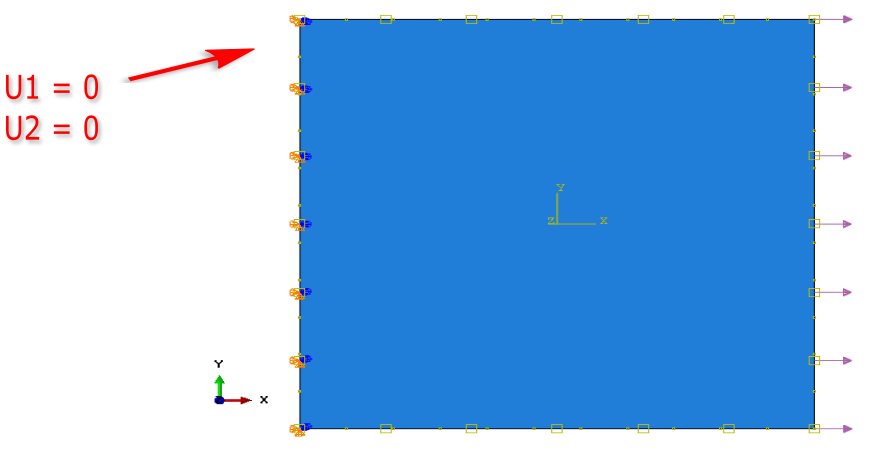

Python and VTK scientific visualisation
CrackVis is a visualisation tool which uses VTK to display a point
cloud from ABAQUS 2D simulations. The input is a csv file which holds
data in the following format:
| X |
Y |
Z1 |
Z2 |
... |
| ... |
... |
... |
... |
... |
Where \(X\) and \(Y\) are the coordinates of the nodes and \(Z_n\) is the
data to be investigated.
The tool will plot the point cloud which represents the nodal values
and add a scalar bar. I had to write my own parser scripts to extract
data from an ABAQUS .odb file to post-process other simulations,
however, I re-purposed them for this case. The code can be found in
this repository. Feel free to modify for your own cases, the use of
the tool is independent of the data you are plotting.
Objective
The purpose of the script is to provide a visual perspective on the
stress distribution of structural elements which can facilitate the
seed of cohesive elements to model crack initiation and propagation.
This is useful to consider when we are speaking of predefined crack
paths i.e. we do not allow arbitrary propagation.
Usage
To use the tool you need to import the CrackVis module, provide the
file name and set user defined properties.
The properties are:
- Scaling factor: otherwise the plot will be difficult to perceive in some cases.
- Feature: the column of the \(Z_n\) which is under investigation.
- Point size.
This is a trail and error approach to make the plot fit your needs.
If there is a better ways to do this let me know ¯\_(ツ)_/¯.
Example
Lets do an example! A simulation with ABAQUS has been ran on a plate
with the following boundary conditions:
- \(U_1 = U_2 = 0\) on West.
- \(+F_1\) on East.
- A quadratic temperature function was applied with 0°C on the
boundary and -160°C in the centre.
They are quite unrealistic but good enough for a test case. A
schematic is shown below.

Lets first import the crackvis module.
In [1]:
from crackvis import VtkPointCloud, SetVtkWindow
Then we define the user variables with the file we want to plot. In
this case we are looking at the principal stress i.e. column 7 in our
export file with a point size of 10 and we scale the values by \(10^8\).
In [2]:
filename = "2D_Crack_Vis_m160C_200MPa.dat"
scale = 10**8
feature = 7
point_size = 10
Finally, lets load the points in our VtkPointCloud object and the
window using SetVtkWindow.
In [3]:
point_cloud = VtkPointCloud(filename, scale, feature, point_size)
point_cloud.load_data()
vtk_window = SetVtkWindow(point_cloud)
We get this sweet 3D plot of the principal stress. Notice how
pronounced it is in the top/bottom edges of the boundary - it
definitely makes sense since some of the nodes in those finite
elements cannot move in x/y! This is good!
Lets also code this for the temperature!
In [4]:
scale = 10**2
feature = 3
point_size = 10
# display the temperature
point_cloud = VtkPointCloud(filename, scale, feature, point_size)
point_cloud.load_data()
vtk_window = SetVtkWindow(point_cloud)
And we can see the quadratic temperature function applied in the FE calculation.
An important part of this project which I need for my PhD is the
scalar bar. As every true scientist I had to add this.
The scalar bar implementation in VTK is based on building a lookup
table and defining the minimum and maximum values of the input. All of
this is done in the window interactor. Luckily, I already have this
from my point cloud class since the points themselves are in a
different interactor then the window.
So lets create our lookup table. Notice how the hue is set to reflect
true engineering notation, read as red=max, blue=min :)
In [5]:
self.lut = vtk.vtkLookupTable()
self.build_lut()
def build_lut(self):
"""
Creates the lookup table
Returns:
- lut (vtkLookupTable): lookup table with red=max, blue=min
"""
self.lut.SetHueRange(0.667, 0)
self.lut.Build()
Then lets build the vtk mapper for the points, this will later be
shared in the window actor where the scalar bar resides.
In [6]:
self.mapper = vtk.vtkPolyDataMapper()
self.mapper.SetInputData(self.vtkPolyData)
self.mapper.SetColorModeToDefault()
self.mapper.SetScalarVisibility(1)
self.mapper.SetLookupTable(self.lut)
# create the actor
self.vtkActor = vtk.vtkActor()
self.vtkActor.SetMapper(self.mapper)
When the file is loaded we extract the minimum and maximum values with
numpy and pass those to the mapper to render the colours correctly.
In [7]:
def set_range(self):
"""
Sets the scalar range in z
"""
self.mapper.SetScalarRange(self.min_data, self.max_data)
Finally, we need to create the scalar bar in the window. This happens
in SetVtkWindow and is a two stage process.
First we need to add the point cloud actor in the window
renderer. This will transfer the mapper as mentioned above. All of it
is achieved in the constructor when the window object is created.
In [8]:
renderer = vtk.vtkRenderer()
renderer.AddActor(point_cloud.vtkActor)
Then, we can build the scalar bar actor and the widget. They will
inherit the hue and the scalar range we have set in the point cloud
mapper.
In [9]:
scalar_bar = vtk.vtkScalarBarActor()
scalar_bar.SetOrientationToHorizontal()
scalar_bar.SetLookupTable(point_cloud.lut)
scalar_bar_widget = vtk.vtkScalarBarWidget()
scalar_bar_widget.SetInteractor(renderWindowInteractor)
scalar_bar_widget.SetScalarBarActor(scalar_bar)
scalar_bar_widget.On()
Voilà we have a scalar bar!
Full Code
Lets also see how the full code works. Below is the code from my
repository and provided by gist-it.
The code consists of two classes:
- VtkPointCloud: builds the point cloud by reading the data file and
adding each point. It also sets the vtk mapper for the scalar bar.
- SetVtkWindow: builds the window, renders the content of the point
cloud and adds the scalar bar.
The reason for the split in two classes is because I wanted to handle
the window separately and add more functionality in the
future. Currently only point clouds are supported since it suits my
purposes for the moment, however, I would need to eventually render
the surface and connect some points of interest to determine the seed
path. But this is work for another day!